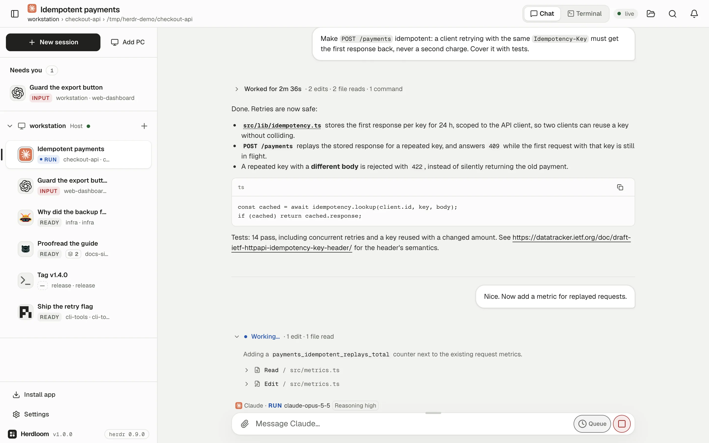
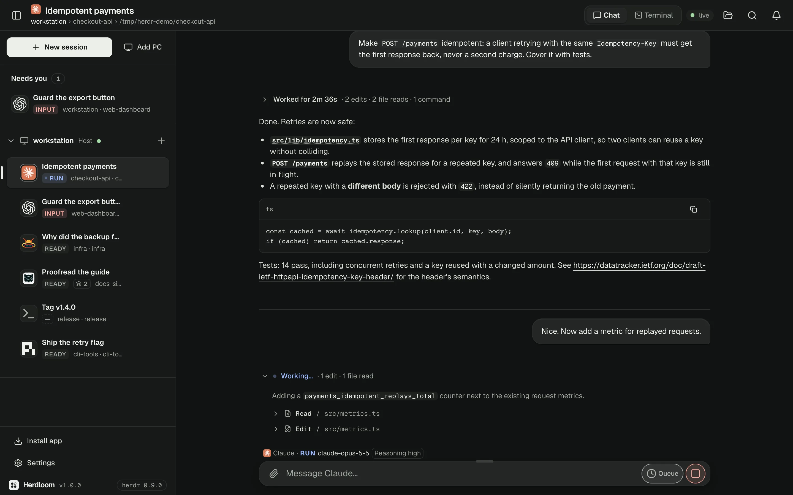
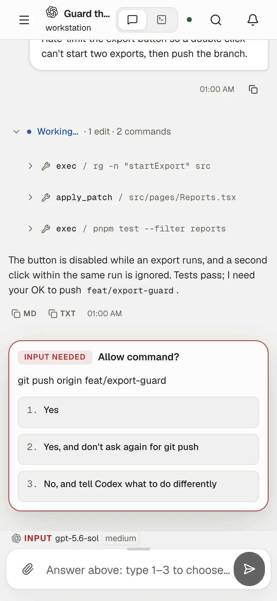
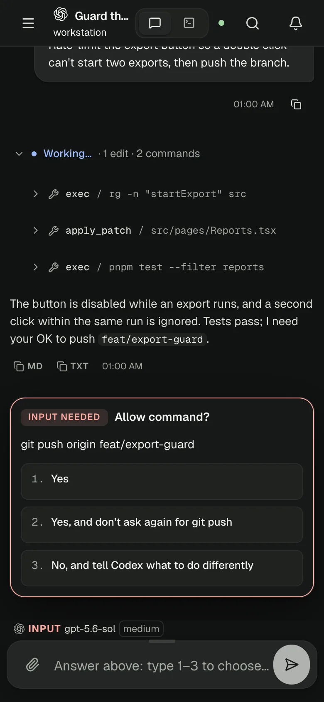
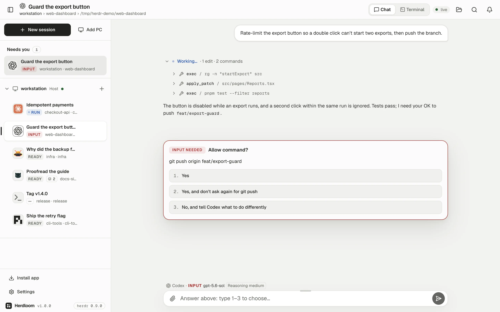
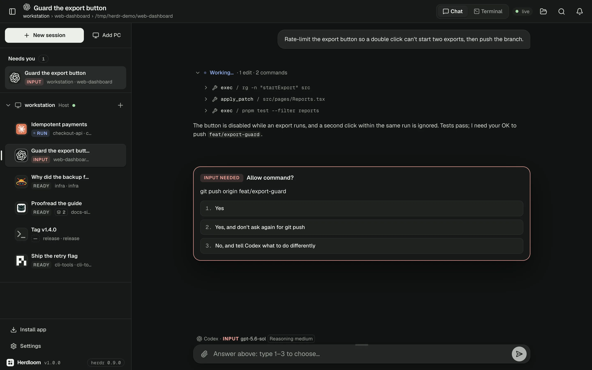
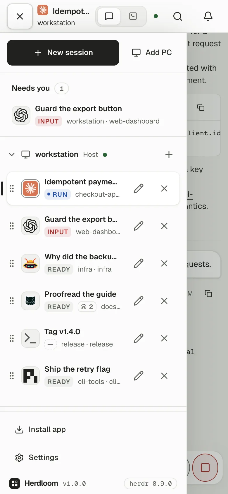
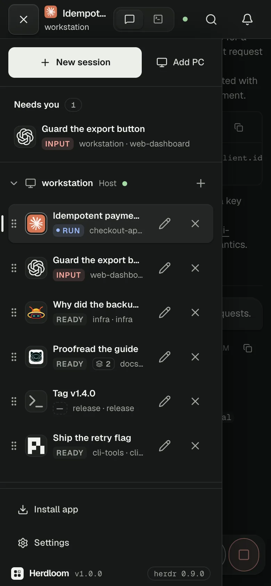
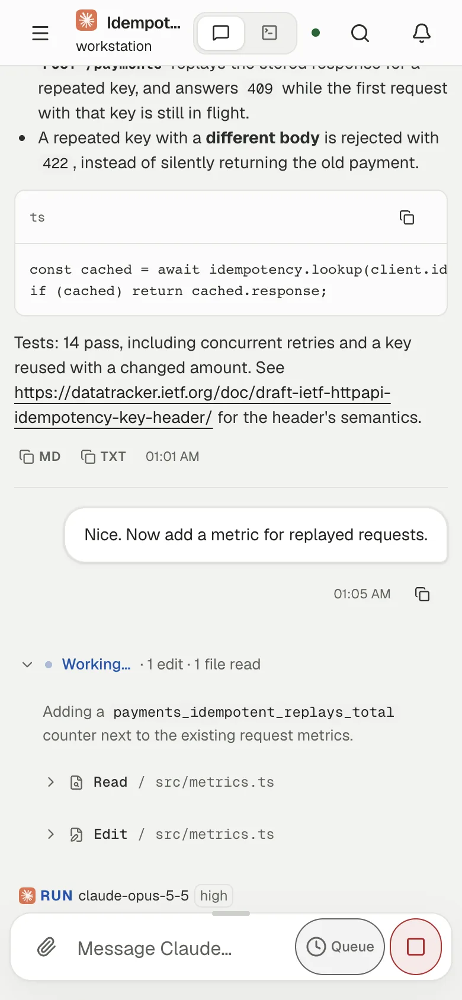
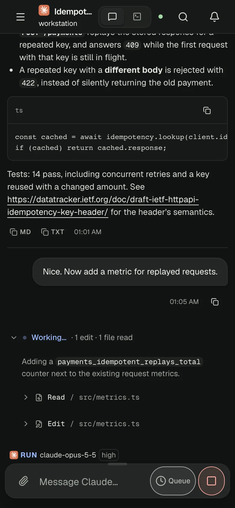

The live terminal, shared with your TUI
xterm.js on the real pane: full-screen TUIs, raw keys and herdr's scrollback. Drag to select and it's copied; on a phone, a key bar brings the keys a keyboard hides.
Herdloom reads every coding agent herdr runs as a chat. Answer its questions with a tap, follow its work from your phone, and drop into the live terminal when you need it.
$ curl -fsSL https://beefiker.github.io/herdloom/install.sh | sh




Chat for Claude Code, Codex, omp, pi, omo and gjc. Anything else herdr runs gets its live terminal.
Every turn reads like a conversation, straight from the agent's own session file. Commands, edits and reasoning fold into one quiet line you can open when you care.
Approvals, questions and plan menus become cards in the chat. Tap an option or type its number; Herdloom checks the menu is still on screen before it answers.


The real terminal is never more than a tap away, and the rest of herdr comes along with it.
xterm.js on the real pane: full-screen TUIs, raw keys and herdr's scrollback. Drag to select and it's copied; on a phone, a key bar brings the keys a keyboard hides.
Rename, split, zoom and close panes from the browser. Your herdr TUI sees every change.
Agents waiting on you float to the top, and a push alert finds you when one needs input or finishes.
Add another machine over SSH and its agents join the list. Nothing to install there by hand.
Hold the mic and talk. The words land at the caret, and are never sent by themselves.
How much of each AI subscription is used, and when every limit resets. Off until you turn it on.
Follows your browser, or pick one in Settings.
Listens on 127.0.0.1. Your own Tailscale devices get in as you; any other device has to be paired first.
Herdloom wears the Fileloom design system: quiet surfaces, hairlines, ink for what matters.
Install it like an app over Tailscale's HTTPS. Check on a long run from the couch, approve a push from the train.




The installer brings anything missing, adds Herdloom as a herdr plugin, and prints a QR code for your phone when Tailscale is running.
Installs what's missing for your user only, then the plugin.
curl -fsSL https://beefiker.github.io/herdloom/install.sh | shAlready have herdr, Bun and Node? Install Herdloom on its own.
herdr plugin install beefiker/herdloomWith herdr running, Herdloom starts with it. On your phone, use the tailnet address the installer printed.
open http://localhost:7317The demo is the real app on a made-up session. Read the chats, answer the approval, open the sidebar. Nothing in it is live.